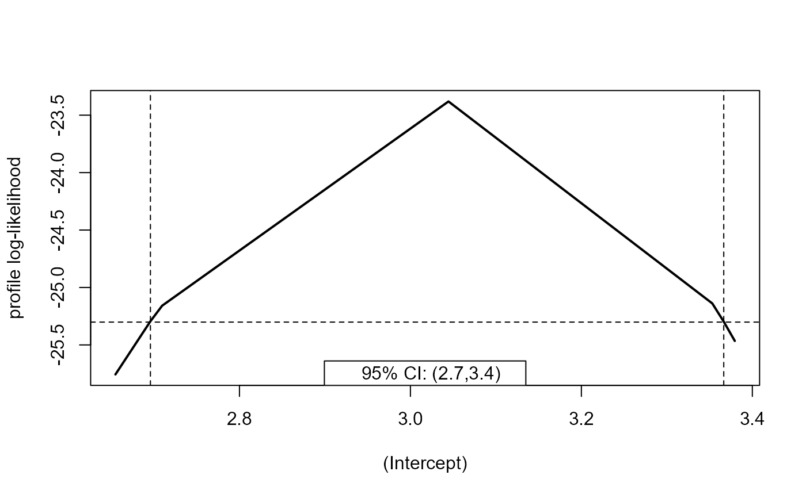
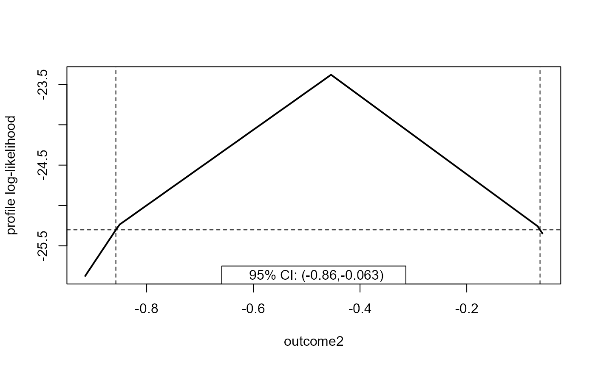

Calculates confidence intervals for one or more parameters for a fitted model object. A function that returns the log-likelihood must also be supplied.
Usage
profileCI(
object,
loglik,
...,
parm = "all",
level = 0.95,
profile = TRUE,
mult = 2,
faster = FALSE,
epsilon = -1,
optim_args = list()
)Arguments
- object
A fitted model object. This object must have a
coefS3 method. Iffaster = TRUEthen it must also have avcovS3 method.- loglik
A named function that returns the log-likelihood based on input parameter values and data. The first argument must be the vector of model parameters. If the likelihood is zero for any observation in the data then the function should return
-Inf.Alternatively,
loglikdoes not need to be supplied if alogLikFnS3 method has been created forobject. TheprofileCIpackage provideslogLikFn.glm, which is used in an example in Examples.- ...
Further arguments to be passed to
loglik.- parm
A vector specifying the parameters for which confidence intervals are calculated, either a vector of numbers or a vector of names. The default,
which = "all", produces confidence intervals for all the parameters.- level
The confidence level required. A numeric scalar in (0, 1).
- profile
A logical scalar. If
TRUEthen confidence intervals based on a profile log-likelihood are returned. IfFALSEthen intervals based on approximate large sample normal theory, which are symmetric about the MLE, are returned.- mult
A positive numeric scalar. Controls the increment by which the parameter of interest is increased/decreased when profiling above/below its MLE. The increment is
mult * se / 100whereseis the estimated standard error of the estimator of the parameter. Decreasingmultprofiles at more points but will be slower.- faster
A logical scalar. If
faster = TRUEthen the profiling of the log-likelihood is in search of a lower (upper) confidence limit is started at the corresponding symmetric lower (upper) confidence limit.- epsilon
Only relevant if
profile = TRUE. A numeric vector of values that determine the accuracy of the confidence limits.epsilonis recycled to the length of the parameter vectorparm.If
epsilon[i] > 0then this value is passed as the argumentepsilonto theitp::itpfunction, which estimates the parameter values for which the profile log-likelihood for parameteridrops to the value that defines the confidence limits, once profiling has been successful in finding an interval within which this value lies.If
epsilon[i] < 0quadratic interpolation is used, which will tend to be faster.If
epsilon[i] = 0then linear interpolation is used, which will be faster still.
- optim_args
A list of further arguments (other than
parandfn) to pass to[stats::optim].
Details
The default, epsilon = -1, should work well enough in most
circumstances, but to achieve a specific accuracy set epsilon to be
a small positive value, for example, epsilon = 1e-4.
Examples
## From example(glm)
counts <- c(18,17,15,20,10,20,25,13,12)
outcome <- gl(3, 1, 9); treatment <- gl(3, 3)
glm.D93 <- glm(counts ~ outcome + treatment, family = poisson())
confint(glm.D93)
#> Waiting for profiling to be done...
#> 2.5 % 97.5 %
#> (Intercept) 2.6958215 3.36655581
#> outcome2 -0.8577018 -0.06255840
#> outcome3 -0.6753696 0.08244089
#> treatment2 -0.3932548 0.39325483
#> treatment3 -0.3932548 0.39325483
confint.default(glm.D93)
#> 2.5 % 97.5 %
#> (Intercept) 2.7095672 3.37947764
#> outcome2 -0.8505027 -0.05800787
#> outcome3 -0.6707552 0.08478093
#> treatment2 -0.3919928 0.39199279
#> treatment3 -0.3919928 0.39199279
poisson_loglik <- function(pars) {
lambda <- exp(model.matrix(glm.D93) %*% pars)
loglik <- stats::dpois(x = counts, lambda = lambda, log = TRUE)
return(sum(loglik))
}
# Will be slower than profile.glm() because glm.fit() is fast
x <- profileCI(glm.D93, loglik = poisson_loglik, mult = 32)
x
#> 2.5% 97.5%
#> (Intercept) 2.6958263 3.36656451
#> outcome2 -0.8576896 -0.06255495
#> outcome3 -0.6753605 0.08244144
#> treatment2 -0.3932497 0.39324971
#> treatment3 -0.3932497 0.39324971
plot(x, parm = 1)

plot(x, parm = "outcome2")

# A logLikFn.glm S3 method is provided in profileCI so we do not need to
# supply loglik explicitly
x <- profileCI(glm.D93, mult = 32)
#> Error in logLikFn.glm(object, pars = pars): object 'counts' not found
x
#> 2.5% 97.5%
#> (Intercept) 2.6958263 3.36656451
#> outcome2 -0.8576896 -0.06255495
#> outcome3 -0.6753605 0.08244144
#> treatment2 -0.3932497 0.39324971
#> treatment3 -0.3932497 0.39324971
x <- profileCI(glm.D93, loglik = poisson_loglik, mult = 32, faster = TRUE)
x
#> 2.5% 97.5%
#> (Intercept) 2.6958271 3.36656670
#> outcome2 -0.8576884 -0.06255488
#> outcome3 -0.6753594 0.08244084
#> treatment2 -0.3932489 0.39324886
#> treatment3 -0.3932489 0.39324886